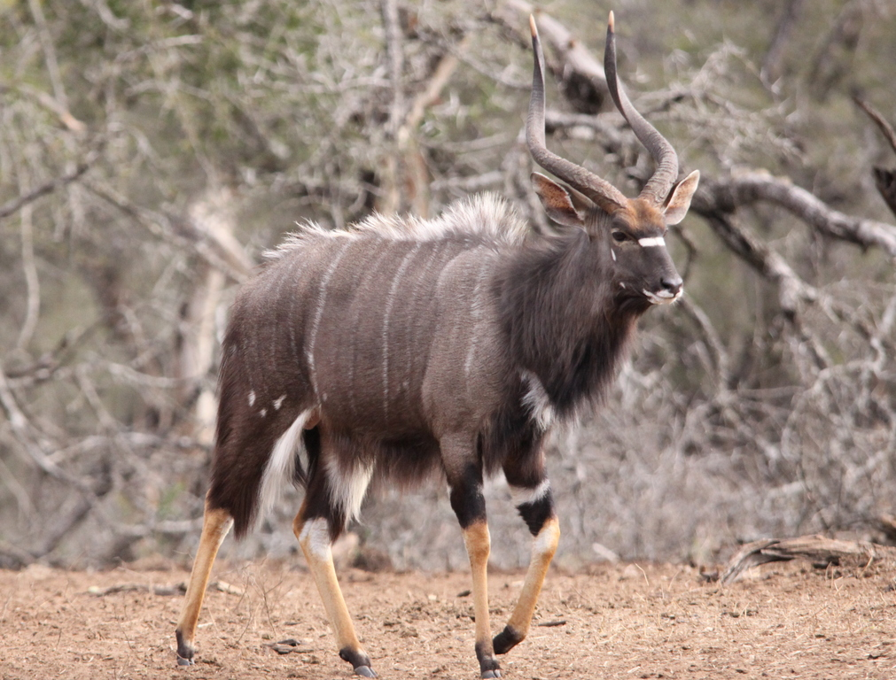

nyala is a spiral-horned antelope native to southern Africa. It is a species of the family Bovidae and genus Tragelaphus, previously placed in genus Nyala. It was first described in 1849 by George French Angas. The body length is 135–195 cm (53–77 in), and it weighs 55–140 kg (121–309 lb). The coat is maroon or rufous brown in females and juveniles, but grows a dark brown or slate grey, often tinged with blue, in adult males. Females and young males have ten or more white stripes on their sides. Only males have horns, 60–83 cm (24–33 in) long and yellow-tipped. It exhibits the highest sexual dimorphism among the spiral-horned antelopes. It is not to be confused with the endangered mountain nyala living in the Bale region of Ethiopia).
